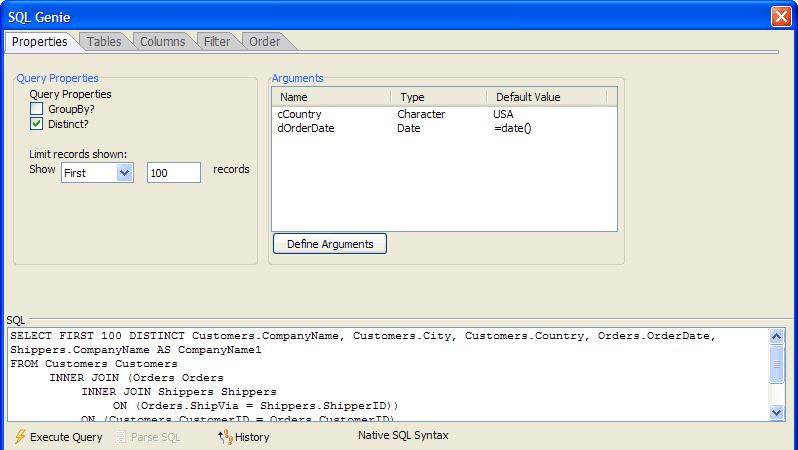

SQL Genie Properties Tab
The Properties tab of the SQL Genie defines additional expressions that limit and group the records that your SQL SELECT statement will return.

Any time that the  Execute Query
button is enabled, you may click it to see a sample of the records that
the query will return. At any time you may click the
Execute Query
button is enabled, you may click it to see a sample of the records that
the query will return. At any time you may click the  History button to see a list of SQL statements previously
created in this session in the <span class=Screen>SQL History Dialog</span>.
History button to see a list of SQL statements previously
created in this session in the <span class=Screen>SQL History Dialog</span>.
To add a GROUP BY clause to your SQL SELECT statement:
Select the GroupBy check box.
To return only records with unique values:
Select the Distinct check box.
To return a specific number of records from the beginning of the query:
Select "First" in the Show list.
Enter an integer number in the Records control.
To define, edit, or delete arguments, click Define Arguments. This displays the Define/Edit Arguments? dialog box.
See Also